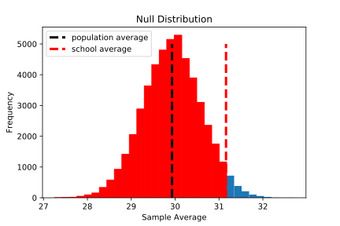

- Step 1: Ask a question. e.g. say a group of students took a test prep course and ended up with a higher average test score than all students taking the test. Did this group really outperform their peers or was it just random chance?
- Step 2: Define the null and alternative hypotheses. This reframes the question more precisely into two competing hypotheses and should always be specified before data collection/experimentation. e.g. the null hypothesis would be that the group of students is a random sample from the population of all students and the fact that they had a higher average score was random chance (because the mean of any sample of the same size from the population will follow a sampling distribution of the mean and some sample will be above or below the population mean). The alternative hypothesis is that the group is from a different population than all the other students, i.e. the test taking population is actually two separate populations: ones that took the test prep course and ones that didn't. We specify in the alternative hypothesis whether we think this second population's mean is greater than, less than, or not equal to (either less than or greater than) the first population of students who didn't take the test prep course.
- Step 3: Determine the null distribution. e.g. Using the Central Limit Theorem, you can create the sampling distribution of the mean for samples of the size of the group of students who took the test prep course. You know this distribution will be centered around the population mean, and you be able to estimate the standard deviation (aka standard error) of the sampling distribution. This gives you information about often you expect samples to have a given mean - most will be close to the population mean, but you will expect to get some samples to be further from the population mean by random chance.
- Step 4:
Calculate a P-value (or confidence interval). This is where you ask the basic question of the hypothesis test: how likely is the observed sample statistic if the null hypothesis is true? This is expressed as a probability called the p-value between 0 and 1 (0 being unlikely and 1 being likely). The answer depends on which type of alternative hypothesis you used - if you said the second population's mean was greater than or less than the first you will have a one-sided or one-tailed test, but if you said it was simply not equal to the first than it is two-sided or two-tailed. e.g. If your alternative hypothesis is that the test prep group of students comes from a different population whose mean score is greater than the first, you want to know what percentage of samples in the null distribution have a mean greater than or equal to the mean of the group of students who took the test prep course. So, if the test prep group's mean is pretty far to the right in the sampling distribution you might have 3.1% of samples would be equal to or greater than it, and your p-value would be 0.031.

Likewise, if your alternative hypothesis was that the test prep group comes from a different population whose mean is less than the first, you would say that 96.9% of sample means would be equal to or less than test prep group's mean if the null hypothesis is true, so your p-value is 0.969.
However, if your alternative hypotheis is that the test prep group is from a population simply with a different mean (either less than or greater to), then you want to know how likely is it that a random sample would be as far away from the population mean as the test prep group, and this is a two-tailed test where the p-value would be 0.062, twice as large as the first test. This is the default for most functions in python and R
- Step 5: Interpret the results. Often we predefine a significance threshold, alpha, and if the p-value is less than that we say it is significant and reject the null hypothesis in favor of the alternative hypothesis, otherwise we say it is an insignificant p-value and do not reject the null hypothesis. Alpha is an arbitrary choice, often 0.05, and it should be chosen before data collection/experimentation. e.g. if our alpha is 0.05 and if our alternative hypothesis was that the test-prep group came from a different population with a higher mean, then since the p-value is 0.031 and less than alpha of 0.05, we would reject the null hypothesis. We are saying since only 3.1% of values would be greater than or equal to the test-prep group mean if the null hypothesis were true, then it is improbable (though certainly not impossible) that the null hypothesis is true. However, if our alternative hypothesis was that the test-prep group came from a population with simply a different mean, then we would not reject the null hypothesis because the p-value is 0.062, i.e. since 6.2% of samples would have a mean that far from the population mean, we don't think it is improbable to get a sample mean that far from the population mean.